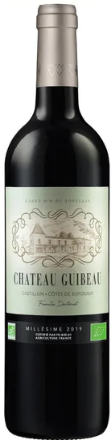
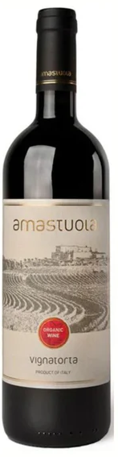
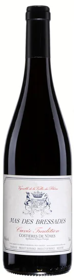
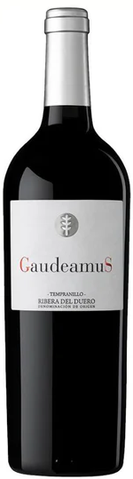
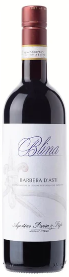
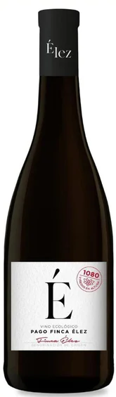

Upoznajte kolekciju naših vina
Svaka boca nosi priču o zemlji, suncu i pažljivo negovanoj lozi. Naša vina nastaju sa strašću, strpljenjem i dubokim poštovanjem prema tradiciji vinogradarstva.

Chardonnay
Sveže i elegantno belo vino

Merlot
Baršunasto crveno vino

Pinot Noir
Rafinirano i aromatično

Chenin Blanc
Voćno i osvežavajuće

Nebbiolo
Duboko i kompleksno

Rose Premium
Lagano i cvetno roze vinoKoje vino je pravo za vas?
Za ljubitelje lakših i svežih vina
Ako uživate u osvežavajućim aromama i laganom telu, naša bela vina su savršen izbor za tople dane i opuštene trenutke.
Za one koji cene ravnotežu
Vina srednjeg tela nude idealan spoj voćnosti i strukture, savršena uz raznovrsna jela i prijatna druženja.
Za istinske poznavaoce
Puna, kompleksna crvena vina namenjena su onima koji uživaju u bogatim aromama, dugom završetku i ozbiljnom karakteru.